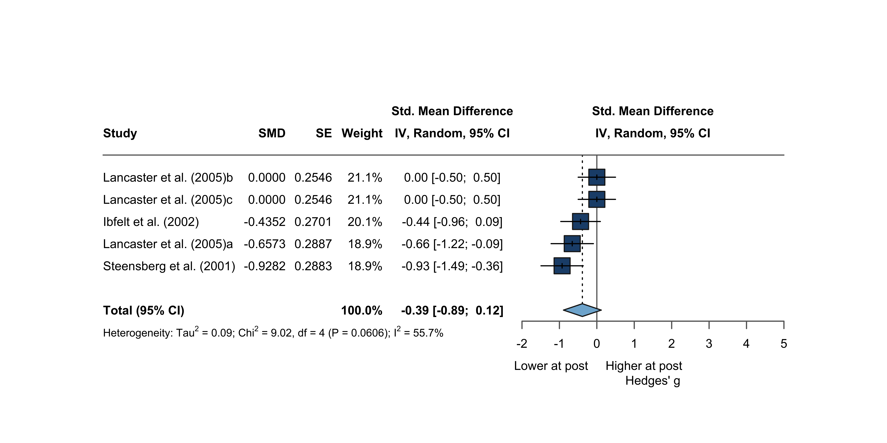

| Effect size file | k | g | 95% CI | p | τ² | I² | 95% PI |
|---|---|---|---|---|---|---|---|
| r = .30 | 5 | -0.43 | [-1.08; 0.23] | .145 | 0.12 | 30.7% | [-1.61; 0.76] |
| r = .40 | 5 | -0.42 | [-1.05; 0.20] | .135 | 0.12 | 36.5% | [-1.57; 0.73] |
| r = .50 (main) | 5 | -0.41 | [-1.01; 0.18] | .125 | 0.11 | 42.5% | [-1.52; 0.69] |
| r = .60 | 5 | -0.40 | [-0.96; 0.15] | .113 | 0.10 | 48.8% | [-1.45; 0.65] |
| r = .70 | 5 | -0.39 | [-0.89; 0.12] | .101 | 0.09 | 55.7% | [-1.37; 0.60] |
5 TH1 - 2 h post-exercise
Summary
5.1 Overview
Based on: M0 - Full - k = 5
5.2 Model Overview
| Model | Excluded | k | g | 95% CI | p | τ² | I² | Status |
|---|---|---|---|---|---|---|---|---|
| M0 - Full | - | 5 | -0.41 | [-1.01; 0.18] | .125 | 0.11 | 42.5% | Reported |
Analysis
Th1_pre_post+2h_r_050.csvModerators - r = .505.3 Data Import
The ~2 h window (effect_size/Th1/pre_post+2h/Th1_pre_post+2h_r_050.csv) contains few arms and no cytokine/BMI coverage, so it is reported for the main analysis, outlier check, funnel, forest, and asymmetry only — no moderator modelling is possible. No study is excluded a priori in this window.
5.4 Primary Meta-Analysis
Based on: M0 - Full - k = 5
| Parameter | Estimate | 95% CI | Test |
|---|---|---|---|
| Pooled effect | |||
| k | 5 | ||
| Hedges' g (random effects) | -0.43 | [-1.08; 0.23] | t(4) = -1.81, p = .145 |
| Prediction interval | [-1.61; 0.76] | ||
| Heterogeneity | |||
| τ² | 0.12 | [0.00; 2.33] | |
| τ | 0.35 | [0.00; 1.53] | |
| I² | 30.7% | [0.0%; 73.4%] | |
| H | 1.20 | [1.00; 1.94] | |
| Q | 5.78 | df = 4, p = .217 | |
| Note. Random effects, inverse variance; τ² estimator: HE; CI: HK. | |||
R output
Number of studies: k = 5
SMD 95% CI t p-value
Random effects model (HK) -0.4257 [-1.0788; 0.2274] -1.81 0.1446
Prediction interval [-1.6108; 0.7594]
Quantifying heterogeneity (with 95% CIs):
tau^2 = 0.1216 [0.0000; 2.3259]; tau = 0.3487 [0.0000; 1.5251]
I^2 = 30.7% [0.0%; 73.4%]; H = 1.20 [1.00; 1.94]
Test of heterogeneity:
Q d.f. p-value
5.78 4 0.2165
Details of meta-analysis methods:
- Inverse variance method
- Hedges estimator for tau^2
- Q-Profile method for confidence interval of tau^2 and tau
- Calculation of I^2 based on Q
- Hartung-Knapp adjustment for random effects model (df = 4)
- Prediction interval based on t-distribution (df = 4)Based on: M0 - Full - k = 5
| Parameter | Estimate | 95% CI | Test |
|---|---|---|---|
| Pooled effect | |||
| k | 5 | ||
| Estimate | -0.43 | [-1.08; 0.23] | z = -1.81, p = .145 |
| Heterogeneity | |||
| τ² | 0.12 | ||
| I² | 40.3% | ||
| H² | 1.67 | ||
| Q | 5.78 | df = 4, p = .217 | |
R output
Random-Effects Model (k = 5; tau^2 estimator: HE)
tau^2 (estimated amount of total heterogeneity): 0.1216 (SE = 0.2196)
tau (square root of estimated tau^2 value): 0.3487
I^2 (total heterogeneity / total variability): 40.28%
H^2 (total variability / sampling variability): 1.67
Test for Heterogeneity:
Q(df = 4) = 5.7756, p-val = 0.2165
Model Results:
estimate se tval df pval ci.lb ci.ub
-0.4257 0.2352 -1.8099 4 0.1446 -1.0788 0.2274
---
Signif. codes: 0 '***' 0.001 '**' 0.01 '*' 0.05 '.' 0.1 ' ' 1
Based on: M0 - Full - k = 5
| Parameter | Estimate | 95% CI | Test |
|---|---|---|---|
| Pooled effect | |||
| k | 5 | ||
| Hedges' g (random effects) | -0.42 | [-1.05; 0.20] | t(4) = -1.87, p = .135 |
| Prediction interval | [-1.57; 0.73] | ||
| Heterogeneity | |||
| τ² | 0.12 | [0.00; 2.09] | |
| τ | 0.34 | [0.00; 1.45] | |
| I² | 36.5% | [0.0%; 76.3%] | |
| H | 1.26 | [1.00; 2.05] | |
| Q | 6.30 | df = 4, p = .178 | |
| Note. Random effects, inverse variance; τ² estimator: HE; CI: HK. | |||
R output
Number of studies: k = 5
SMD 95% CI t p-value
Random effects model (HK) -0.4210 [-1.0465; 0.2045] -1.87 0.1350
Prediction interval [-1.5709; 0.7290]
Quantifying heterogeneity (with 95% CIs):
tau^2 = 0.1173 [0.0000; 2.0884]; tau = 0.3425 [0.0000; 1.4451]
I^2 = 36.5% [0.0%; 76.3%]; H = 1.26 [1.00; 2.05]
Test of heterogeneity:
Q d.f. p-value
6.30 4 0.1777
Details of meta-analysis methods:
- Inverse variance method
- Hedges estimator for tau^2
- Q-Profile method for confidence interval of tau^2 and tau
- Calculation of I^2 based on Q
- Hartung-Knapp adjustment for random effects model (df = 4)
- Prediction interval based on t-distribution (df = 4)Based on: M0 - Full - k = 5
| Parameter | Estimate | 95% CI | Test |
|---|---|---|---|
| Pooled effect | |||
| k | 5 | ||
| Estimate | -0.42 | [-1.05; 0.20] | z = -1.87, p = .135 |
| Heterogeneity | |||
| τ² | 0.12 | ||
| I² | 43.4% | ||
| H² | 1.77 | ||
| Q | 6.30 | df = 4, p = .178 | |
R output
Random-Effects Model (k = 5; tau^2 estimator: HE)
tau^2 (estimated amount of total heterogeneity): 0.1173 (SE = 0.1951)
tau (square root of estimated tau^2 value): 0.3425
I^2 (total heterogeneity / total variability): 43.42%
H^2 (total variability / sampling variability): 1.77
Test for Heterogeneity:
Q(df = 4) = 6.3020, p-val = 0.1777
Model Results:
estimate se tval df pval ci.lb ci.ub
-0.4210 0.2253 -1.8686 4 0.1350 -1.0465 0.2045
---
Signif. codes: 0 '***' 0.001 '**' 0.01 '*' 0.05 '.' 0.1 ' ' 1
Based on: M0 - Full - k = 5
| Parameter | Estimate | 95% CI | Test |
|---|---|---|---|
| Pooled effect | |||
| k | 5 | ||
| Hedges' g (random effects) | -0.41 | [-1.01; 0.18] | t(4) = -1.94, p = .125 |
| Prediction interval | [-1.52; 0.69] | ||
| Heterogeneity | |||
| τ² | 0.11 | [0.00; 1.84] | |
| τ | 0.33 | [0.00; 1.36] | |
| I² | 42.5% | [0.0%; 78.9%] | |
| H | 1.32 | [1.00; 2.17] | |
| Q | 6.96 | df = 4, p = .138 | |
| Note. Random effects, inverse variance; τ² estimator: HE; CI: HK. | |||
R output
Number of studies: k = 5
SMD 95% CI t p-value
Random effects model (HK) -0.4137 [-1.0063; 0.1789] -1.94 0.1247
Prediction interval [-1.5190; 0.6917]
Quantifying heterogeneity (with 95% CIs):
tau^2 = 0.1110 [0.0000; 1.8375]; tau = 0.3332 [0.0000; 1.3555]
I^2 = 42.5% [0.0%; 78.9%]; H = 1.32 [1.00; 2.17]
Test of heterogeneity:
Q d.f. p-value
6.96 4 0.1382
Details of meta-analysis methods:
- Inverse variance method
- Hedges estimator for tau^2
- Q-Profile method for confidence interval of tau^2 and tau
- Calculation of I^2 based on Q
- Hartung-Knapp adjustment for random effects model (df = 4)
- Prediction interval based on t-distribution (df = 4)Based on: M0 - Full - k = 5
| Parameter | Estimate | 95% CI | Test |
|---|---|---|---|
| Pooled effect | |||
| k | 5 | ||
| Estimate | -0.41 | [-1.01; 0.18] | z = -1.94, p = .125 |
| Heterogeneity | |||
| τ² | 0.11 | ||
| I² | 46.9% | ||
| H² | 1.88 | ||
| Q | 6.96 | df = 4, p = .138 | |
R output
Random-Effects Model (k = 5; tau^2 estimator: HE)
tau^2 (estimated amount of total heterogeneity): 0.1110 (SE = 0.1699)
tau (square root of estimated tau^2 value): 0.3332
I^2 (total heterogeneity / total variability): 46.86%
H^2 (total variability / sampling variability): 1.88
Test for Heterogeneity:
Q(df = 4) = 6.9560, p-val = 0.1382
Model Results:
estimate se tval df pval ci.lb ci.ub
-0.4137 0.2134 -1.9381 4 0.1247 -1.0063 0.1789
---
Signif. codes: 0 '***' 0.001 '**' 0.01 '*' 0.05 '.' 0.1 ' ' 1
Based on: M0 - Full - k = 5
| Parameter | Estimate | 95% CI | Test |
|---|---|---|---|
| Pooled effect | |||
| k | 5 | ||
| Hedges' g (random effects) | -0.40 | [-0.96; 0.15] | t(4) = -2.02, p = .113 |
| Prediction interval | [-1.45; 0.65] | ||
| Heterogeneity | |||
| τ² | 0.10 | [0.00; 1.57] | |
| τ | 0.32 | [0.00; 1.25] | |
| I² | 48.8% | [0.0%; 81.2%] | |
| H | 1.40 | [1.00; 2.31] | |
| Q | 7.81 | df = 4, p = .099 | |
| Note. Random effects, inverse variance; τ² estimator: HE; CI: HK. | |||
R output
Number of studies: k = 5
SMD 95% CI t p-value
Random effects model (HK) -0.4028 [-0.9560; 0.1504] -2.02 0.1133
Prediction interval [-1.4535; 0.6479]
Quantifying heterogeneity (with 95% CIs):
tau^2 = 0.1027 [0.0000; 1.5742]; tau = 0.3205 [0.0000; 1.2547]
I^2 = 48.8% [0.0%; 81.2%]; H = 1.40 [1.00; 2.31]
Test of heterogeneity:
Q d.f. p-value
7.81 4 0.0988
Details of meta-analysis methods:
- Inverse variance method
- Hedges estimator for tau^2
- Q-Profile method for confidence interval of tau^2 and tau
- Calculation of I^2 based on Q
- Hartung-Knapp adjustment for random effects model (df = 4)
- Prediction interval based on t-distribution (df = 4)Based on: M0 - Full - k = 5
| Parameter | Estimate | 95% CI | Test |
|---|---|---|---|
| Pooled effect | |||
| k | 5 | ||
| Estimate | -0.40 | [-0.96; 0.15] | z = -2.02, p = .113 |
| Heterogeneity | |||
| τ² | 0.10 | ||
| I² | 50.9% | ||
| H² | 2.04 | ||
| Q | 7.81 | df = 4, p = .099 | |
R output
Random-Effects Model (k = 5; tau^2 estimator: HE)
tau^2 (estimated amount of total heterogeneity): 0.1027 (SE = 0.1441)
tau (square root of estimated tau^2 value): 0.3205
I^2 (total heterogeneity / total variability): 50.87%
H^2 (total variability / sampling variability): 2.04
Test for Heterogeneity:
Q(df = 4) = 7.8089, p-val = 0.0988
Model Results:
estimate se tval df pval ci.lb ci.ub
-0.4028 0.1992 -2.0214 4 0.1133 -0.9560 0.1504
---
Signif. codes: 0 '***' 0.001 '**' 0.01 '*' 0.05 '.' 0.1 ' ' 1
Based on: M0 - Full - k = 5
| Parameter | Estimate | 95% CI | Test |
|---|---|---|---|
| Pooled effect | |||
| k | 5 | ||
| Hedges' g (random effects) | -0.39 | [-0.89; 0.12] | t(4) = -2.12, p = .101 |
| Prediction interval | [-1.37; 0.60] | ||
| Heterogeneity | |||
| τ² | 0.09 | [0.00; 1.30] | |
| τ | 0.30 | [0.00; 1.14] | |
| I² | 55.7% | [0.0%; 83.6%] | |
| H | 1.50 | [1.00; 2.47] | |
| Q | 9.02 | df = 4, p = .061 | |
| Note. Random effects, inverse variance; τ² estimator: HE; CI: HK. | |||
R output
Number of studies: k = 5
SMD 95% CI t p-value
Random effects model (HK) -0.3867 [-0.8926; 0.1191] -2.12 0.1010
Prediction interval [-1.3724; 0.5990]
Quantifying heterogeneity (with 95% CIs):
tau^2 = 0.0928 [0.0000; 1.3016]; tau = 0.3046 [0.0000; 1.1409]
I^2 = 55.7% [0.0%; 83.6%]; H = 1.50 [1.00; 2.47]
Test of heterogeneity:
Q d.f. p-value
9.02 4 0.0606
Details of meta-analysis methods:
- Inverse variance method
- Hedges estimator for tau^2
- Q-Profile method for confidence interval of tau^2 and tau
- Calculation of I^2 based on Q
- Hartung-Knapp adjustment for random effects model (df = 4)
- Prediction interval based on t-distribution (df = 4)Based on: M0 - Full - k = 5
| Parameter | Estimate | 95% CI | Test |
|---|---|---|---|
| Pooled effect | |||
| k | 5 | ||
| Estimate | -0.39 | [-0.89; 0.12] | z = -2.12, p = .101 |
| Heterogeneity | |||
| τ² | 0.09 | ||
| I² | 55.9% | ||
| H² | 2.27 | ||
| Q | 9.02 | df = 4, p = .061 | |
R output
Random-Effects Model (k = 5; tau^2 estimator: HE)
tau^2 (estimated amount of total heterogeneity): 0.0928 (SE = 0.1179)
tau (square root of estimated tau^2 value): 0.3046
I^2 (total heterogeneity / total variability): 55.93%
H^2 (total variability / sampling variability): 2.27
Test for Heterogeneity:
Q(df = 4) = 9.0213, p-val = 0.0606
Model Results:
estimate se tval df pval ci.lb ci.ub
-0.3867 0.1822 -2.1226 4 0.1010 -0.8926 0.1191
---
Signif. codes: 0 '***' 0.001 '**' 0.01 '*' 0.05 '.' 0.1 ' ' 1
5.5 Outlier Detection
Based on: M0 - Full - k = 5
| Study | g | Std. residual |
|---|---|---|
| Ibfelt et al. (2002) | -0.435 | -0.004 |
| Steensberg et al. (2001) | -1.340 | -1.973 |
| Lancaster et al. (2005)a | -0.657 | -0.442 |
| Lancaster et al. (2005)b | 0.000 | 0.968 |
| Lancaster et al. (2005)c | 0.000 | 0.968 |
Based on: M0 - Full - k = 5
| Study | g | Std. residual |
|---|---|---|
| Ibfelt et al. (2002) | -0.435 | -0.014 |
| Steensberg et al. (2001) | -1.257 | -2.027 |
| Lancaster et al. (2005)a | -0.657 | -0.469 |
| Lancaster et al. (2005)b | 0.000 | 0.997 |
| Lancaster et al. (2005)c | 0.000 | 0.997 |
Based on: M0 - Full - k = 5
| Study | g | Std. residual |
|---|---|---|
| Ibfelt et al. (2002) | -0.435 | -0.031 |
| Steensberg et al. (2001) | -1.164 | -2.079 |
| Lancaster et al. (2005)a | -0.657 | -0.510 |
| Lancaster et al. (2005)b | 0.000 | 1.031 |
| Lancaster et al. (2005)c | 0.000 | 1.031 |
Based on: M0 - Full - k = 5
| Study | g | Std. residual |
|---|---|---|
| Ibfelt et al. (2002) | -0.435 | -0.059 |
| Steensberg et al. (2001) | -1.056 | -2.040 |
| Lancaster et al. (2005)a | -0.657 | -0.573 |
| Lancaster et al. (2005)b | 0.000 | 1.072 |
| Lancaster et al. (2005)c | 0.000 | 1.072 |
Based on: M0 - Full - k = 5
| Study | g | Std. residual |
|---|---|---|
| Ibfelt et al. (2002) | -0.435 | -0.106 |
| Steensberg et al. (2001) | -0.928 | -1.791 |
| Lancaster et al. (2005)a | -0.657 | -0.674 |
| Lancaster et al. (2005)b | 0.000 | 1.123 |
| Lancaster et al. (2005)c | 0.000 | 1.123 |
Note
No outcome has standardized residuals above 3 or below -3.
r = .50
5.6 Funnel Plot & Influential Cases
Based on: M0 - Full - k = 5
| Study | g | intrcpt |
|---|---|---|
| Ibfelt et al. (2002) | -0.435 | -0.061 |
| Steensberg et al. (2001) | -1.340 | -0.776 |
| Lancaster et al. (2005)a | -0.657 | -0.316 |
| Lancaster et al. (2005)b | 0.000 | 0.641 |
| Lancaster et al. (2005)c | 0.000 | 0.641 |
Based on: M0 - Full - k = 5
| Study | g | intrcpt |
|---|---|---|
| Ibfelt et al. (2002) | -0.435 | -0.071 |
| Steensberg et al. (2001) | -1.257 | -0.823 |
| Lancaster et al. (2005)a | -0.657 | -0.344 |
| Lancaster et al. (2005)b | 0.000 | 0.681 |
| Lancaster et al. (2005)c | 0.000 | 0.681 |
Based on: M0 - Full - k = 5
| Study | g | intrcpt |
|---|---|---|
| Ibfelt et al. (2002) | -0.435 | -0.085 |
| Steensberg et al. (2001) | -1.164 | -0.876 |
| Lancaster et al. (2005)a | -0.657 | -0.380 |
| Lancaster et al. (2005)b | 0.000 | 0.731 |
| Lancaster et al. (2005)c | 0.000 | 0.731 |
Based on: M0 - Full - k = 5
| Study | g | intrcpt |
|---|---|---|
| Ibfelt et al. (2002) | -0.435 | -0.107 |
| Steensberg et al. (2001) | -1.056 | -0.934 |
| Lancaster et al. (2005)a | -0.657 | -0.433 |
| Lancaster et al. (2005)b | 0.000 | 0.793 |
| Lancaster et al. (2005)c | 0.000 | 0.793 |
Based on: M0 - Full - k = 5
| Study | g | intrcpt |
|---|---|---|
| Ibfelt et al. (2002) | -0.435 | -0.146 |
| Steensberg et al. (2001) | -0.928 | -0.993 |
| Lancaster et al. (2005)a | -0.657 | -0.514 |
| Lancaster et al. (2005)b | 0.000 | 0.877 |
| Lancaster et al. (2005)c | 0.000 | 0.877 |
5.7 Forest Plot
Based on: M0 - Full - k = 5
Based on: M0 - Full - k = 5
Based on: M0 - Full - k = 5
Based on: M0 - Full - k = 5
Based on: M0 - Full - k = 5

5.8 Asymmetry Test
Note: the number of studies (k = 5) is too small to reliably test for small-study effects (minimum k = 10; Borenstein et al., 2009). No Egger’s test or trim-and-fill is performed.
5.9 Sensitivity Analyses
| Analysis | k | g | 95% CI | p | τ² | I² |
|---|---|---|---|---|---|---|
| Main analysis | 5 | -0.43 | [-1.08; 0.23] | .145 | 0.12 | 30.7% |
| Lancaster et al. (2005) - n / 3 | 5 | -0.55 | [-1.23; 0.13] | .087 | 0.00 | 0.0% |
| Excluding crossover design - Lancaster et al. (2005) | 2 | -0.83 | [-6.54; 4.87] | .314 | 0.19 | 46.6% |
| Analysis | k | g | 95% CI | p | τ² | I² |
|---|---|---|---|---|---|---|
| Main analysis | 5 | -0.42 | [-1.05; 0.20] | .135 | 0.12 | 36.5% |
| Lancaster et al. (2005) - n / 3 | 5 | -0.54 | [-1.19; 0.10] | .078 | 0.00 | 0.1% |
| Excluding crossover design - Lancaster et al. (2005) | 2 | -0.80 | [-6.00; 4.39] | .299 | 0.16 | 46.7% |
| Analysis | k | g | 95% CI | p | τ² | I² |
|---|---|---|---|---|---|---|
| Main analysis | 5 | -0.41 | [-1.01; 0.18] | .125 | 0.11 | 42.5% |
| Lancaster et al. (2005) - n / 3 | 5 | -0.53 | [-1.13; 0.07] | .069 | 0.00 | 6.3% |
| Excluding crossover design - Lancaster et al. (2005) | 2 | -0.77 | [-5.38; 3.84] | .281 | 0.12 | 45.9% |
| Analysis | k | g | 95% CI | p | τ² | I² |
|---|---|---|---|---|---|---|
| Main analysis | 5 | -0.40 | [-0.96; 0.15] | .113 | 0.10 | 48.8% |
| Lancaster et al. (2005) - n / 3 | 5 | -0.52 | [-1.07; 0.03] | .059 | 0.00 | 12.5% |
| Excluding crossover design - Lancaster et al. (2005) | 2 | -0.73 | [-4.66; 3.21] | .257 | 0.08 | 43.1% |
| Analysis | k | g | 95% CI | p | τ² | I² |
|---|---|---|---|---|---|---|
| Main analysis | 5 | -0.39 | [-0.89; 0.12] | .101 | 0.09 | 55.7% |
| Lancaster et al. (2005) - n / 3 | 5 | -0.49 | [-0.98; 0.00] | .050 | 0.01 | 18.9% |
| Excluding crossover design - Lancaster et al. (2005) | 2 | -0.67 | [-3.80; 2.46] | .224 | 0.04 | 35.8% |